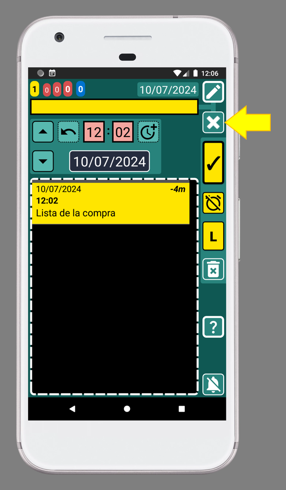
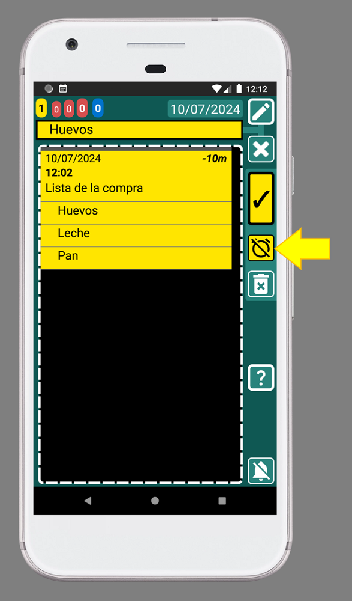

SECURElogBook también permite crear listas. Una vez creada una lista, podrás moverla y copiarla.
Cuanto más personalices el menú Favoritos según tus necesidades, más fácil y rápido será agregar todo.
Una vez que completes la lista, no es necesario eliminarla. Al contrario, cuanta más información tenga la aplicación, más te ayudará. Si utilizas la aplicación para hacer tus listas de compras, el sistema de búsqueda te permitirá saber cosas como:
. ¿Con qué frecuencia haces compras?
. ¿Con qué frecuencia compras verduras?
. ¡Si agregas el nombre de la tienda, incluso podrás saber dónde compraste esa tarta que tanto te gustó!
Cuando termines de comprar, puedes agregar el precio total en la cabecera de la lista. Luego, si usas la misma lista de la compra en diferentes tiendas, podrás ver la diferencia de precio.
1. Abre SECURElogBook y ve a la ventana principal, con fondo azul:

2. Presiona el botón (I) para agregar una nueva tarea o registro.
3. Una vez que se abre la ventana del creador (fondo verde), podemos crear nuestra tarea o registro:

La pequeña lista con todos los registros (K) mostrará solo los registros que coincidan o sigan el momento seleccionado por fecha y hora (D y F).
4. Por defecto, la hora del registro está configurada en el presente y la tarea se marca como no completada. Por eso, los botones de registro (H, I, J) están en amarillo.
Cuando creamos un registro, es útil tener la hora actual configurada como la hora de nuestro registro por defecto. Observa que la hora del teléfono es la misma que la de nuestro registro, 21:19 (imagen de arriba). Gracias a eso, podemos sumar o restar tiempo fácilmente cuando usamos el botón

5. Puedes darle el nombre que quieras a tu lista, pero llamémosla "Lista de la compra":

6. Después de agregar el texto "Lista de la compra", podemos guardar el registro presionando el botón indicado con la flecha amarilla (imagen de arriba).
7. Toca el registro "Lista de la compra" para editarlo:

8. La ventana del editor (fondo verde azulado) mostrará el registro "Lista de la compra":

Por defecto, cuando editamos un registro, el registro que estamos editando será el primero en la lista de registros de la ventana del editor. En este caso, solo tenemos un registro, "Lista de la compra".
9. Escribe o selecciona desde el menú de Favoritos el artículo que deseas agregar. En este caso, vamos a agregar "Pan":

10. Después de agregar el texto "Pan", presiona el botón con la "L" (lista), indicado con la flecha amarilla. Esto añadirá el artículo "Pan" a la lista:
Cada vez que agregamos un artículo a la lista, el cuadro de texto se borrará.
Observa cómo el registro "Pan" se ha añadido debajo del registro "Lista de la compra" (imagen de arriba).
11. Ahora escribe "Huevos" o selecciona desde el menú de Favoritos. Luego, presiona el botón con la "L" (lista), indicado con la flecha amarilla, para añadir el artículo a la lista:

12. Ahora escribe "Leche" o selecciona desde el menú de Favoritos. Luego, presiona el botón con la "L" (lista), indicado con la flecha amarilla, para añadir el artículo a la lista:
Ten en cuenta que los artículos en la lista se ordenarán alfabéticamente. Si deseas cambiar el orden de los artículos antes de crear los registros, puedes añadir delante del texto: 1. , 2. , 3. , ... Los números te ayudarán a ordenar la lista.
13. Presiona el botón de retroceso en tu teléfono para volver a la ventana principal:

14. Toca el registro "Lista de la compra" para editarlo:

Una vez que tenemos una lista, los artículos están vinculados al primer registro, en este caso "Lista de la compra". Podemos usar ese registro para mover la lista en el tiempo o crear una copia de toda la lista.
15. Para completar un artículo de la lista, indicando que ya está en el carrito, podemos MANTENERLO presionado. Mantén presionado el dedo sobre "Huevos". Esto abrirá el registro "Huevos":

Para completar "Huevos", indicando que ya los pusimos en el carrito, presiona el botón con la flecha amarilla (imagen de arriba).
Ahora, los botones de registro están en negro, indicando que la tarea "Huevos" está completada (en el carrito).

16. Para guardar el registro y volver atrás, presiona el botón indicado con la flecha amarilla (imagen de arriba).
Ahora podemos ver que hemos "completado" los "Huevos" porque el registro ahora está en negro:
17. Repite el paso 15 hasta que todos los artículos de la lista estén en negro.
18. Ahora que todo está en el carrito, puedes completar el registro "Lista de la compra":
¡Bien hecho! ¡Has logrado crear tu primera lista de la compra!
¿Cómo eliminar un elemento de la lista?
Para eliminar un elemento de la lista debemos hacerlo desde la ventana principal.
1. Abre SECURElogBook y ve a la ventana principal, con fondo azul:
2. Eliminemos el registro "Leche". Para hacerlo, simplemente seleccione con el dedo "Leche" para editarlo:
3. Luego presione el botón indicado con la flecha amarilla (imagen de arriba):

Se ha eliminado el registro "Leche".
En una lista, todos los registros están vinculados al registro principal de esa lista. Esa es la razon por la que puede eliminar la lista eliminando el registro principal. También puede mover y copiar la lista completa moviendo o copiando el registro principal de la lista.
En el pasado, las personas dedicaban tiempo a hacer listas de compras. Gastaban tiempo pensando y adivinando lo que necesitaban comprar. Eso les quitaba mucho tiempo de sus vidas. Muchas veces, olvidaban cosas importantes, por lo que tenían que hacer un segundo viaje a la tienda. Incluso algunas personas hacían este sacrificio varias veces a la semana, donde perdían tiempo y dinero.
Ahora puedes usar SECURElogBook. Siempre está contigo. Puedes crear una lista de la compra con días de anticipación y agregar elementos a medida que los recuerdas. Además, no necesitas perder tiempo adivinando o pensando en qué comprar. Puedes ver lo que normalmente compras gracias al menú de Favoritos. Al mirar la lista, te ayudará a darte cuenta si te falta algo o no.
MODO TURBO: Simplemente puedes buscar listas de compras en tus datos y elegir una que tenga lo que necesitas. Luego, puedes crear una copia. ¡Ole! ¡R√©cord mundial de creaci√≥n de listas de compras roto! üòâ Recuerda que siempre puedes agregar o quitar elementos de la lista copiada.
Consejo 1: Acostúmbrate a agregar todo lo que normalmente compras a tu menú de Favoritos. No es tan dif√≠cil üòâ Te ahorrará mucho tiempo a largo plazo. Si lo haces, en poco tiempo podrás hacer tu lista de la compra como un profesional!
Consejo 2: Por lo general, creo la lista de la compra como un registro amarillo. De esta manera, siempre estará resaltada y fácil de encontrar. Comienzo el proceso tan pronto como noto que necesito comprar algo. Luego, creo una lista de la compra y agrego el artículo a ella. Con el tiempo, recordaré que necesito comprar más cosas, así que las agrego de inmediato. Finalmente, cuando decido que voy a hacer las compras, le echo un vistazo rápido a mi lista de la compra para asegurarme de que no falte nada.